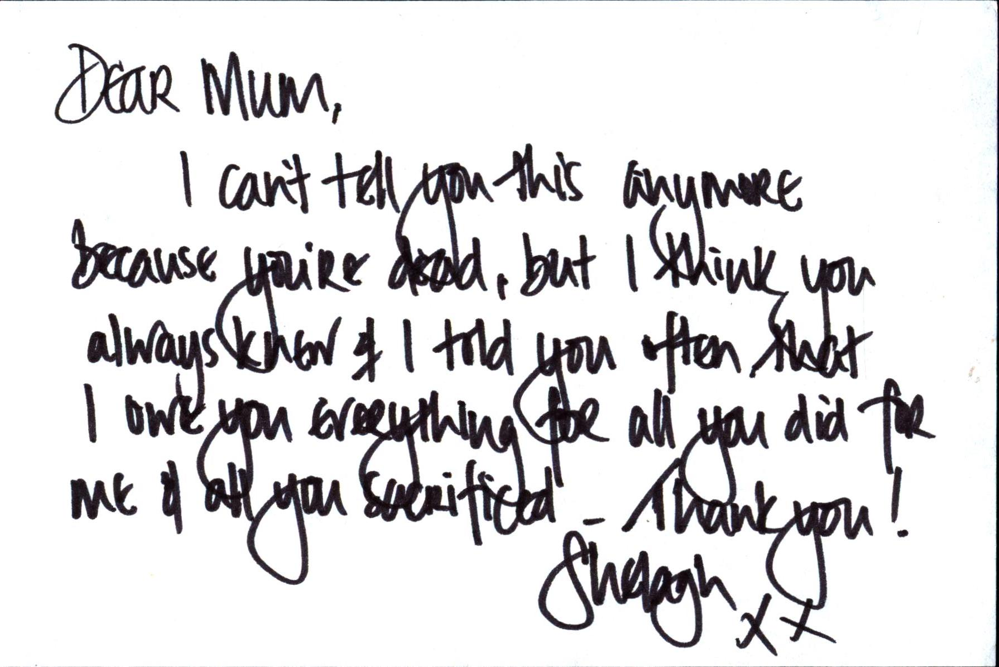
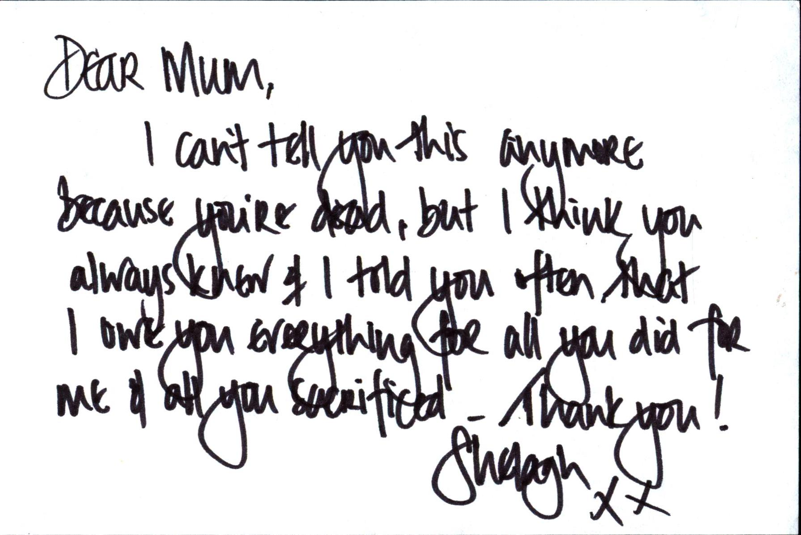
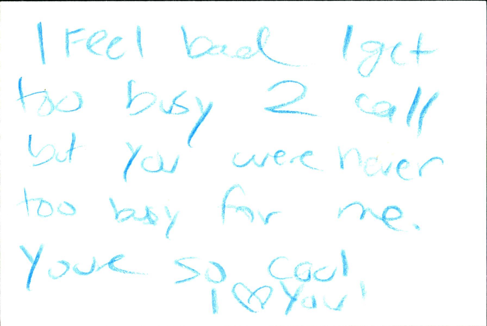
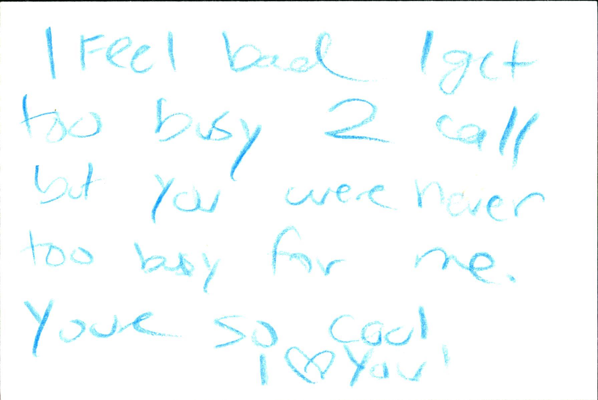

For this project, Sakura and I wanted to get a better understanding of the multifaceted relationships we have with our mothers and how this may differ from person to person. We asked: what do you wish you could tell your mother?
Once we had an idea of how we wanted to approach this question, we created a design brief. We knew we wanted to receive physical letters from people with their answer and we wanted to be able to display them in the form of an installation that other people could walk in and experience.
Our challenges: we had 4 weeks, the chances of us receiving actual letters in the mail was very small especially with the time constraints, the Parsons building just had an electrical fire which limited our resources and facilities, we had to crowdsource, and some aspect of our final assignment had to be 3D printed.
What we did: we decided that a quick and easy way to get people engaged and receive responses was through a website. I coded up a site using HTML, CSS, JS + PHP that explained our project and what we were doing, provided a form which allowed people to anonymously submit their response to our question, and displayed the letters we had received. -- lettertomom.net
To get the word out, we mass printed posters and stickers and put them up in The New School buildings and around the area, in subway stations and trains, where we work, and around where we live (Washington Heights and Brooklyn). In addition, we shared a link to all our friends and family, posted on multiple social media platforms, and spread it via word of mouth. Our goal was to receive at least 70 responses and for people to go a little deeper than just “I love you.”
Incentive? The opportunity to get some bottled up feelings off your chest and have it be kept anonymous. To be able to read other peoples responses and see that you’re not the only one that shares the same feelings you do. Maybe not everyone has some deeper feelings but they get a chance to revisit the relationship they have with someone important to them.
Still holding onto the idea of receiving physical, handwritten letters, we decided to set up camp in the New School University Center lobby (by this I mean we went through an extraneous process of reserving a table) and we provided pens and paper for people to write us what they wish they could tell their mothers and then anonymously drop it into a box in exchange for some candy.

After receiving an influx of letters, both physical and via email, we curated these into a book using InDesign and then printed and bound it ourselves.
We originally planned on 3D printing a case for this book with ‘Letters To Mom” printed on top, but later found out that the dimensions of our book were larger than the printers we had available to us due to the Parsons building being closed for the time being. We ended up just 3D printing the title Letters to Mom and hanging them on the front door!
As for the installation, we emptied out one of the rooms in Sakura’s apartment, hung all of the physical letters up from the ceiling, found a table on the streets of Brooklyn to display our book on, cooked traditional (Bulgarian & Japanese) treats, and invited our friends over for a private reception.


Thank you again to everyone who contributed and came out to view our work!


 


 
